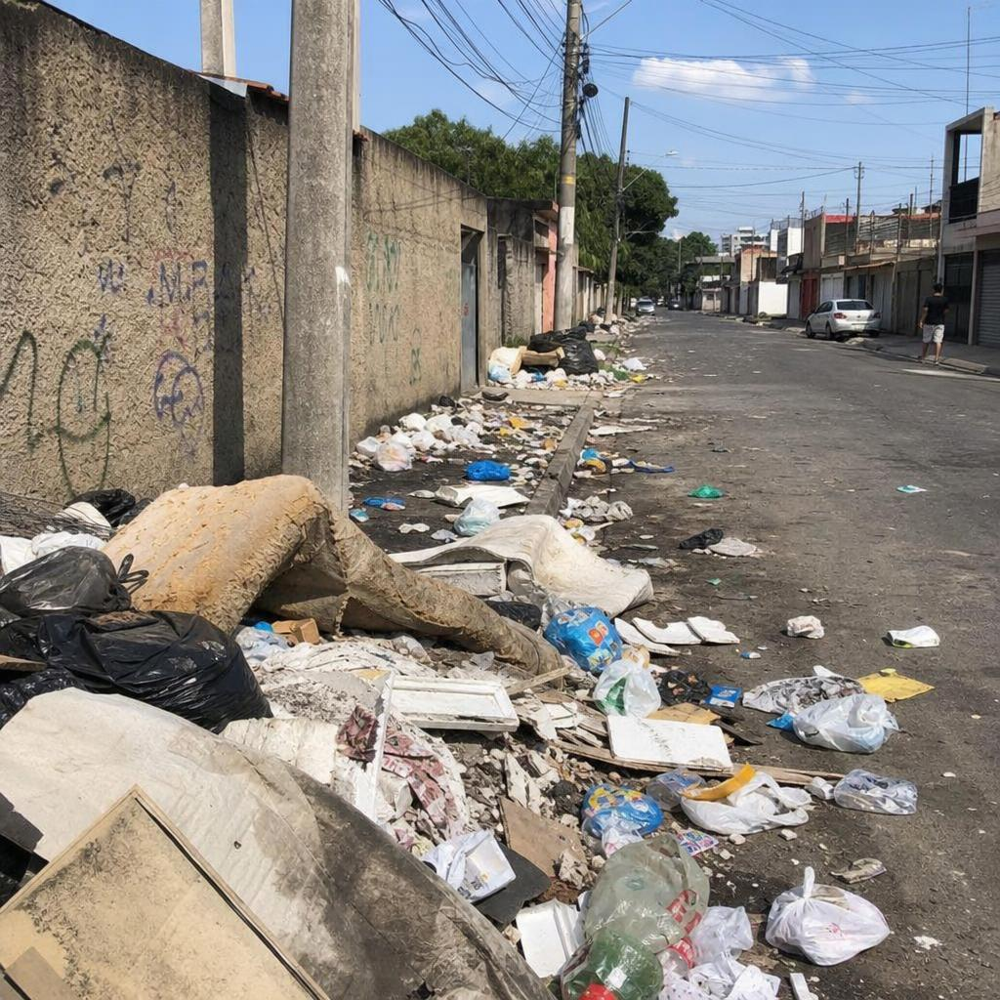
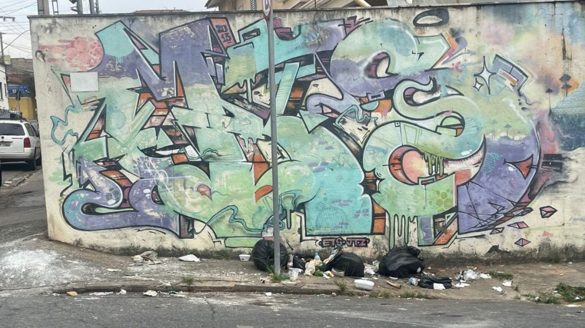
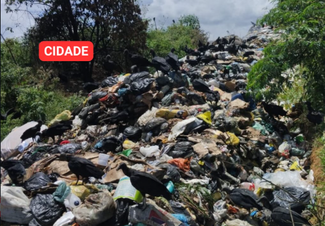
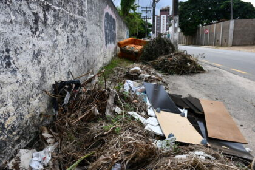
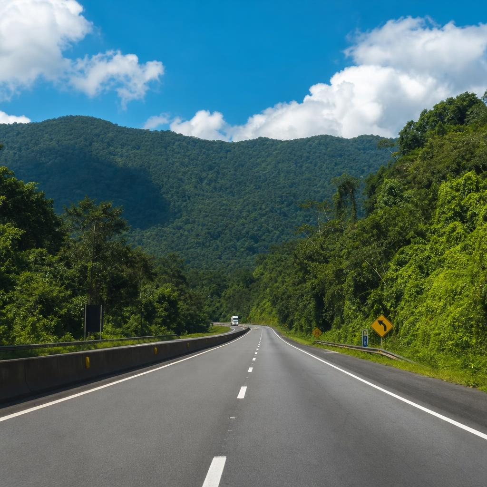
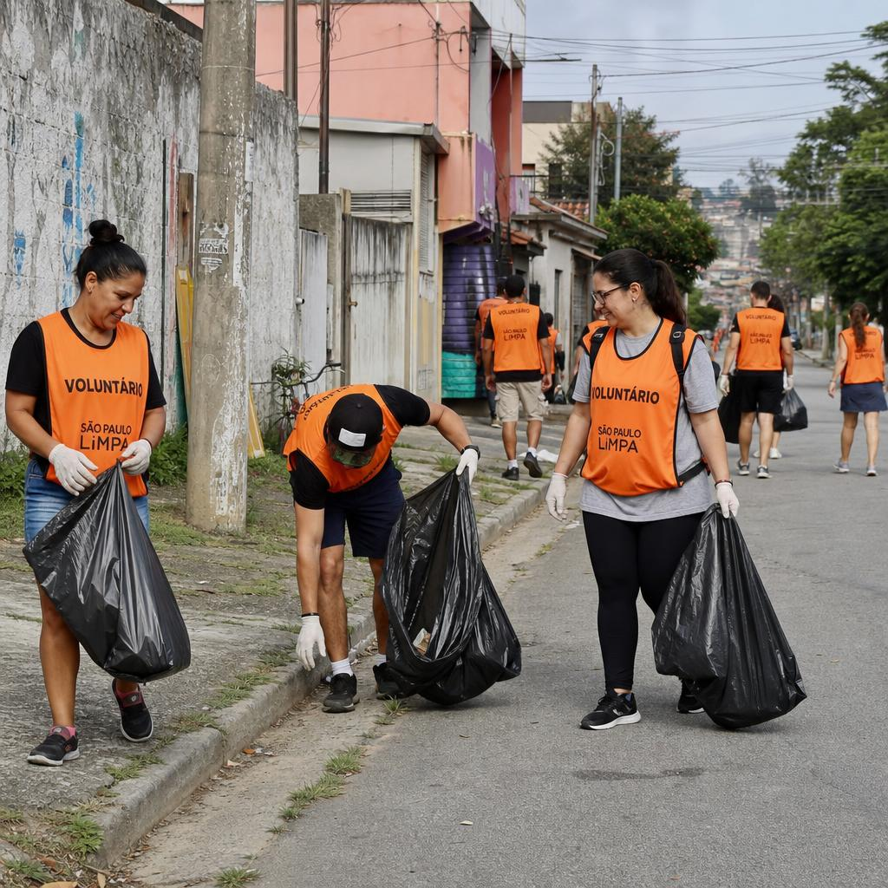
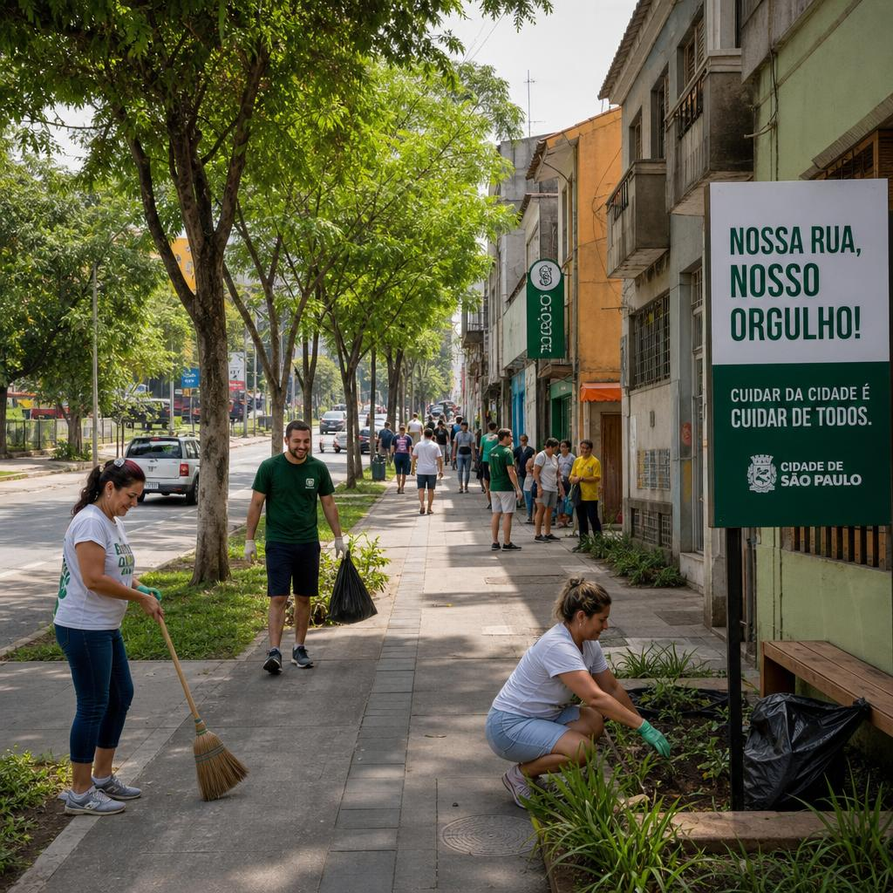

Esse é o caminho que temos hoje.
Milhares de toneladas de resíduos são descartados irregularmente todos os dias nas ruas, estradas e terrenos do Brasil.
Veja como mudar issoO Problema

Belo Horizonte, MG
Águas Formosas, MG
Vitória da Conquista, BA79 milhões
de toneladas de lixo geradas por ano no Brasil
40%
têm destinação inadequada
3 mil
lixões ainda ativos no país

Esse é o caminho que queremos.
O Caminho Limpo trabalha para transformar essa realidade através de coleta responsável, educação ambiental e ação comunitária.
Nossa Atuação
Identificamos pontos críticos de descarte irregular na cidade.
Organizamos mutirões e coletas programadas de resíduos.
Encaminhamos materiais para cooperativas de reciclagem.
Conscientizamos a população sobre descarte correto.

Ação Comunitária
Nossos voluntários já realizaram mais de 50 mutirões de limpeza em bairros, estradas e áreas verdes. Cada ação remove toneladas de lixo e transforma a paisagem urbana.
Nosso Impacto

Menos lixo nas ruas
nos bairros onde atuamos
Material reciclado
do total coletado em mutirões
Famílias impactadas
com ruas mais limpas e seguras
Seja voluntário, denuncie pontos de descarte irregular ou apoie nossa causa. Cada ação conta.